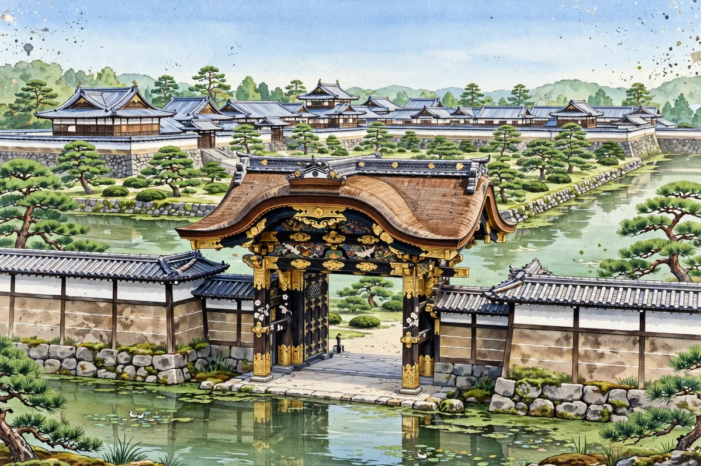

Nijo Castle in Kyoto and Tokugawa Rule: A Shogun's Residence Designed Not for War

Many of the castles covered in our articles so far were castles prepared for battle. Nijo Castle is a little different in character: a castle the Tokugawa shogunate placed in Kyoto, built to display the shogun's authority.
【Built by Ieyasu as the Shogun's Lodging】Nijo Castle is said to have been begun by Tokugawa Ieyasu in 1603. It was the shogun's lodging when he came up to Kyoto, and a base of rule over the capital, connected with shogunate officials such as the Kyoto Shoshidai. While it has the form of a castle equipped with moats, stone walls and gates, its keep was demolished in a later age, and the palace buildings form its center.
【Ninomaru Palace and Its Painted Screens】The Ninomaru Palace, a National Treasure, is known as shoin-zukuri architecture, and its interior screen paintings and carved transoms are the highlight. The corridors that make a sound when walked on — the 'uguisubari' (nightingale floors) — are often described as a device for security, though views differ on their purpose. Together with the garden, you can feel a space of hospitality and authority quite unlike a castle built for fighting.
【The Stage of the Taisei Hokan】In 1867 (Keio 3), at the end of the Edo period, Tokugawa Yoshinobu is said to have declared in the Ninomaru Palace his intention to return governing power to the Emperor (the Taisei Hokan), making Nijo Castle a place that witnessed both the beginning and the end of the shogunate. In 1994 it was inscribed as one of the 'Historic Monuments of Ancient Kyoto' UNESCO World Cultural Heritage sites.
【Exam Study Points】The keep of Nijo Castle does not survive. Take care not to confuse it in your review of the twelve surviving keeps. In the textbook it deepens understanding as a representative example of the flow in Chapter 1: 'castles changed from military bases into seats of government and symbols of authority.'
Nijo Castle is a place that widens how you look at castles. Compare its 'castle-ness' of stone walls and moats with the 'palace-ness' of its palace buildings as you walk.
- Kumamoto Castle's Road to Recovery: From the 2016 Earthquake to the Restored Keep and the Long Way to Full Restoration
- Hikone Castle and the Ii Clan's Castle Town: The National Treasure Keep, Genkyuen Garden and a Walk by Lake Biwa
- Inuyama Castle and the Kiso River: Views of the River and Castle Town from a National Treasure Keep
Recommended books for this article
Castle Guide
Samurai Castles: History / Architecture / Visitors' Guides
Hundreds of color photographs and close-up detail on Japan's most important surviving samurai castles — their history, design and military features, with guidance for visitors. The best single companion for castle sightseeing.
View at Barnes & NobleCheck the price at Barnes & Noble
Castle History
Japanese Castles 1540–1640
Author: Stephen Turnbull
The great castles of Japan's warring-states era: how the strongholds of the daimyo were built, defended and attacked, explained by the leading English-language historian of samurai warfare, with illustrations throughout.
View at Pickwick BookshopCheck the price at Pickwick Bookshop
Travel Guide
Lonely Planet Japan (Travel Guide), 19th Edition
Author: Lonely Planet
The standard Japan travel guide in its 19th edition — trip planning, itineraries, transport and on-the-ground detail. The practical backbone for a castle-and-shrine trip.
View at TargetCheck the price at Target
Book links on this page go to the retailers' product pages. Prices and availability are shown on the retailer's page.